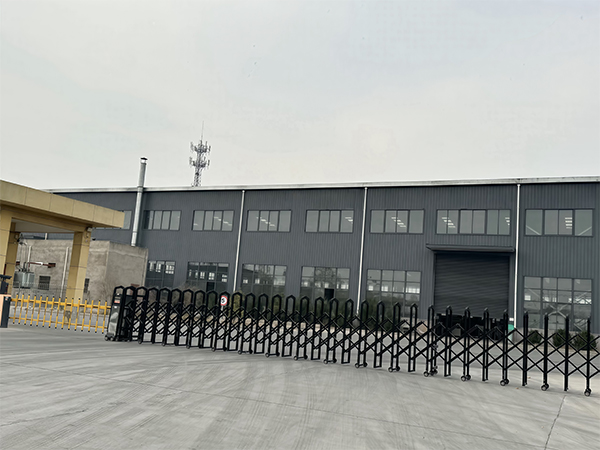
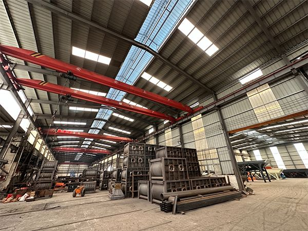
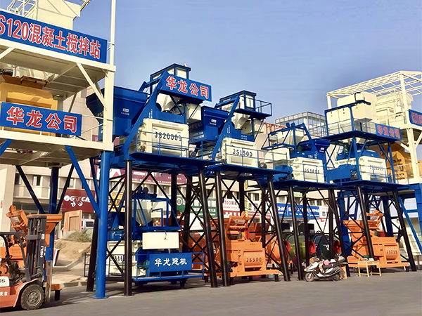

Resumen de la Fábrica
YUDA HUALONG YUDA HUALONG exploite une installation de production moderne de 40 000 mètres carrés, équipée de machinerie avancée et d'équipes techniques expérimentées., equipada con maquinaria avanzada y equipos técnicos experimentados. Nos enfocamos en ofrecer equipos de hormigón confiables con estricto control de calidad en todo el proceso de fabricación.
De la sélection des matières premières à l'inspection finale, chaque étape suit des normes professionnelles de production.. Nuestra instalación incluye talleres dedicados para fabricación estructural, ensamblaje, cableado eléctrico y pruebas de calidad.



40,000 m²
Base de production moderne avec installations complètes para equipos de hormigón
Ingénieurs, techniciens et spécialistes du contrôle qualité expérimentés
Control de Calidad
Procédures d'inspection strictes garantissant des produits fiables
Suministro Global
Support aux clients et projets dans le monde entier
Capacité de Production
40,000 m²
Base de producción con cadena completa desde corte de acero hasta ensamblaje final.
Installations Complètes
Talleres dedicados para fabricación, ensamblaje, cableado eléctrico y pruebas de calidad.
Equipo Técnico
Ingenieros, técnicos y especialistas en control de calidad con experiencia.
Entrega Global
Envío confiable a Asia Central, África, Medio Oriente y más.
Avantages de Fabrication
Production Professionnelle
Procesos de producción estandarizados y operadores calificados aseguran calidad consistente en todos los productos.
Instalaciones Completas
Talleres dedicados que cubren toda la cadena de producción desde fabricación hasta ensamblaje y pruebas finales.
Tests Rigoureux
Cada máquina se somete a pruebas exhaustivas antes de la entrega, incluyendo operación de prueba y pruebas de carga.
Visitez Notre Usine
Bienvenue à Zhengzhou pour voir notre processus de fabrication. nuestra base de producción en Zhengzhou. Vea nuestro proceso de fabricación de primera mano.
Planifier une Visite